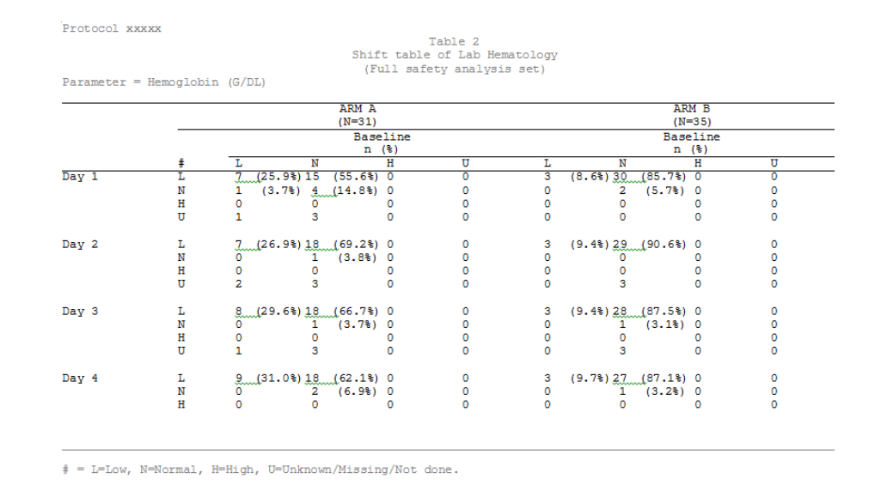

Tidy Shift Tables in R
A tidy approach to create Shift Tables using {gt}
What is a Shift Table
A shift table is a table that displays the number of subjects in different range (e.g. low, normal, or high) at baseline and then shift or transition at selected time points or time intervals. The purpose of the shift table is to illustrate the progress of change from baseline and help to make reasonable inference.
Shift Tables in Clinical Trials
It is important to look at the effect of the drug by comparing values at baseline and post-baseline in any clinical trials. Shift Table is one of the analysis methods suggested in ICH E3 Guidelines to show the number of patients who are low, normal, or high at baseline and at selected time intervals. It is easier to figure out any abnormality in data because the layout helps to get the count of subjects at two time points simultaneously. It can be used to analyze any data like laboratory records, vital signs, ECG etc.
Shift Table for Laboratory Records
All safety related data is collected in a clinical trial study for safety analysis. The laboratory data is one of the most important assessments for safety consideration.
There are several summary tables commonly used to present laboratory results; Descriptive statistics, CTCAE summaries and Shift Tables are some of the most widely used ones. The shift table is one of the most frequently requested outputs in a clinical study by statisticians or clinicians.
Figure 1 represents a Shift Table showing the number of subjects with low, normal, or high Hemoglobin records at baseline and post-dose together.
